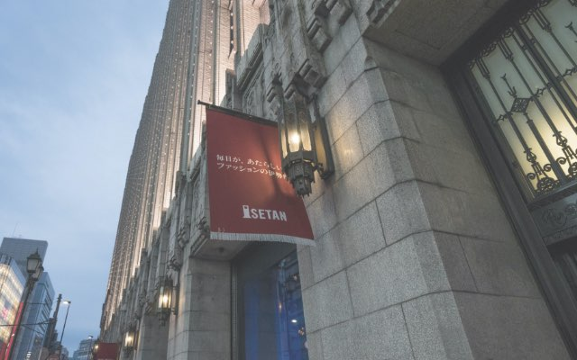

ACCESS
Image photo

山手線内側・都心の
全方位アクセスを手中にする。
All-around access to the inside of the Yamanote Line
and the super city center is at hand.
この都心は、心の豊かさ、人生の豊かさを広げる。
山手線内側の特徴は、縦横無尽にアクセスできる網の目のように張り巡らされた
地下鉄の存在が大きい。さらに、JR山手線まで最寄駅として利用可能。
徒歩10分圏内に5駅6路線※1という
この大きなアドバンテージは、都心をスピーディにつなぎ、
通勤はもちろん、休日のお買い物・レジャーを充実させてくれる。
都心の利
あらゆる都市を“思うがまま”に、中心を生きられる。
大手町駅
東京駅
銀座周辺
- 
伊勢丹新宿店
表参道周辺
「湯島」駅徒歩5分・
「本郷三丁目」駅
徒歩6分。
山手線内側の多彩な
機動力が集約する
5駅6路線※1。
あなたの時間を自在に、幾つもの路線を自由に。ここは、あらゆる都市へ手が届く
魅力的なポジション。東京メトロ千代田線「湯島」駅へ徒歩5分。都営大江戸線
「本郷三丁目」駅へ徒歩6分。東京メトロ丸ノ内線「本郷三丁目」駅へは徒歩8分。さらに、東京メトロ銀座線「上野広小路」駅と都営大江戸線「上野御徒町」駅が
徒歩9分。そして、都心の大動脈であるJR山手線・京浜東北線「御徒町」駅も徒歩
10分。オンの日も、オフの日も、すべての時間にゆとりという贈り物をくれる。
路線図
路線図
- 東京メトロ丸ノ内線「本郷三丁目」駅より
-
-
「後楽園」駅へ
1分(1分)
東京メトロ丸ノ内線利用
-
「御茶ノ水」駅へ
1分(1分)
東京メトロ丸ノ内線利用
-
「東 京」駅へ
6分(7分)
東京メトロ丸ノ内線利用
-
「池 袋」駅へ
9分(9分)
東京メトロ丸ノ内線利用
-
「銀 座」駅へ
9分(9分)
東京メトロ丸ノ内線利用
-
- 東京メトロ千代田線「湯島」駅
-
-
「大手町」駅へ
4分(4分)
東京メトロ千代田線利用
-
「西日暮里」駅へ
6分(5分)
東京メトロ千代田線利用
-
「日比谷」駅へ
7分(7分)
東京メトロ千代田線利用
-
「霞ケ関」駅へ
9分(10分)
東京メトロ千代田線利用
-
「国会議事堂前」駅へ
11分(12分)
東京メトロ千代田線利用
-
「赤 坂」駅へ
13分(13分)
東京メトロ千代田線利用
-
- 都営大江戸線「本郷三丁目」駅
-
-
「上野御徒町」駅へ
2分(2分)
都営大江戸線利用
-
「飯田橋」駅へ
3分(3分)
都営大江戸線利用
-
「両 国」駅へ
8分(8分)
都営大江戸線利用
-
「清澄白河」駅へ
11分(11分)
都営大江戸線利用
-
「新宿西口」駅へ
14分(14分)
都営大江戸線利用
-
「都庁前」駅へ
17分(16分)
都営大江戸線利用
-
「大手町」「霞ヶ関」
「銀座」「東京」
「池袋」「新宿西口」
「日比谷」「赤坂」
この全てが“直通＆
15分圏”という
プレミアム。
丸ノ内線
Marunouchi Line
個性豊かな街々をぐるりと一周するようにつなぐ路線。
地上区間がないため、天候による遅延も比較的少ない。
東京・新宿・池袋のビッグターミナル、ビジネス拠点の大手町、華やぐ銀座を束ねる。
Image photo
大江戸線
Oedo Line
都庁前や新宿西口のほか、
両国などの下町、
華やぐ都市をぐるりとひとつ
につなぐ。
東京・新宿・池袋の
ビッグターミナル、ビジネス拠点の大手町、華やぐ銀座を束ねる。
Image photo
千代田線
Chiyoda Line
ビジネス拠点の大手町、表参道などの洗練された街をはじめ、
風情ある根津、千駄木も連なる新旧の魅力が揃う路線。
洗練された街での新しい発見と、風情ある街の懐かしさに、心穏やかになれる。
Image photo
「5駅6路線※1」だけで
はない圧倒的な
都心。
徒歩15分な
ら、さらに広がる
「10駅14路線※2」。
時間にとらわれない
タクシー利用は、
都心ならではの
メリット。
時間をもっと自由に楽しみたい人々へ。各主要駅からのタクシー利用も快適な距離感。都心のきらびやかなナイトシーンを存分に謳歌でき、終電を逃しても安心して帰宅できる。
-
大手町
距離 約2.8ｋｍ
通常料金
1,220円深夜料金
1,460円 -
新宿西口
距離 約8.4ｋｍ
通常料金
3,540円深夜料金
4,260円 -
東 京
距離 約3.7ｋｍ
通常料金
1,620円深夜料金
1,940円 -
池 袋
距離 約6.4ｋｍ
通常料金
2,740円深夜料金
3,220円 -
銀 座
距離 約4.9ｋｍ
通常料金
2,100円深夜料金
2,500円 -
上 野
距離 約1.9ｋｍ
通常料金
900円深夜料金
1,060円
Image photo